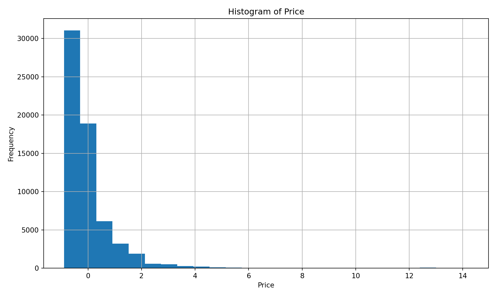
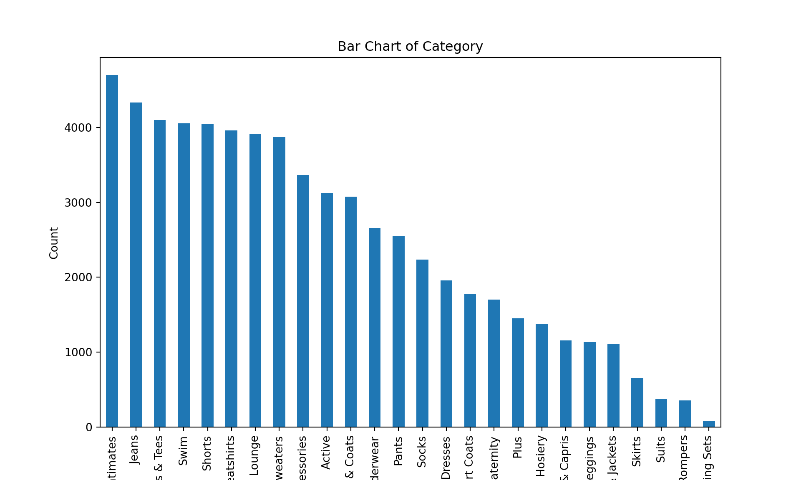
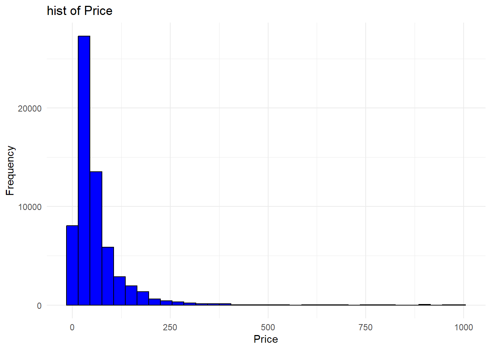
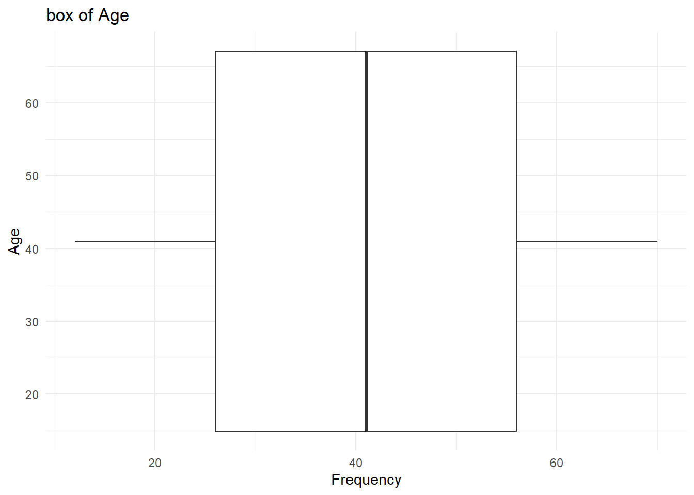
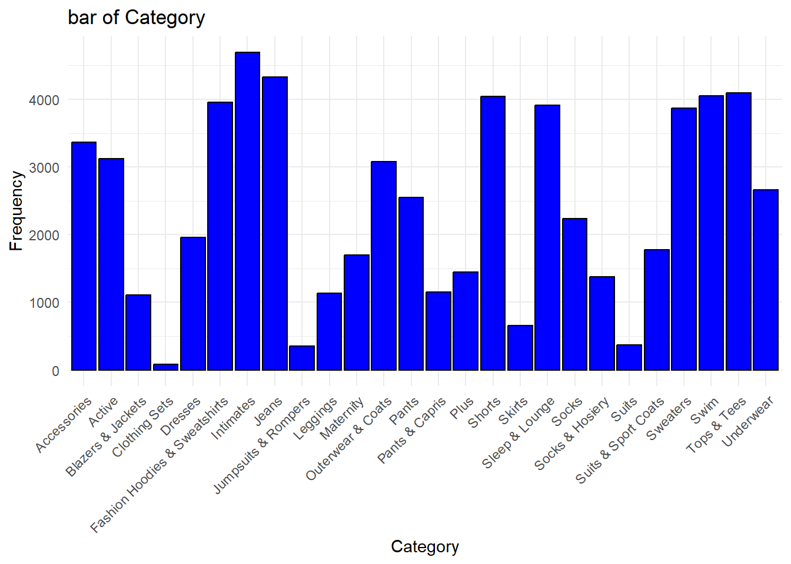

# 2. Loop 2: Price Bulk Ordersquantities = [88, 126, 126, 100, 186, 200, 216, 250]for quantity in quantities:if quantity <=100: cost = quantity *250elif quantity <=200: cost =100*250+ (quantity -100) *225else: cost =100*250+100*225+ (quantity -200) *200print(f"The cost for an order of {quantity} gadgets is ${cost}.")
The cost for an order of 88 gadgets is $22000.
The cost for an order of 126 gadgets is $30850.
The cost for an order of 126 gadgets is $30850.
The cost for an order of 100 gadgets is $25000.
The cost for an order of 186 gadgets is $44350.
The cost for an order of 200 gadgets is $47500.
The cost for an order of 216 gadgets is $50700.
The cost for an order of 250 gadgets is $57500.
Q2a - R
Code
# 2. Loop 2: Price Bulk Ordersquantities <-c(88, 126, 126, 100, 186, 200, 216, 250)for (quantity in quantities) {if (quantity <=100) { cost <- quantity *250 } elseif (quantity <=200) { cost <-100*250+ (quantity -100) *225 } else { cost <-100*250+100*225+ (quantity -200) *200 }cat(sprintf("The cost for an order of %d gadgets is $%d.\n", quantity, cost))}
The cost for an order of 88 gadgets is $22000.
The cost for an order of 126 gadgets is $30850.
The cost for an order of 126 gadgets is $30850.
The cost for an order of 100 gadgets is $25000.
The cost for an order of 186 gadgets is $44350.
The cost for an order of 200 gadgets is $47500.
The cost for an order of 216 gadgets is $50700.
The cost for an order of 250 gadgets is $57500.
Q3a - Python
Code
# 3. Loop 3: Create an Amortization Schedulebalance =220000i =0.006# 0.6% monthly interest ratepayment =220000* (0.006* (1+0.006)**360) / ((1+0.006)**360-1) #comes out to about $1493.33months =360for month inrange(1, months +1): interest = balance * i principal = payment - interest balance = balance - principalif month %12==0:print(f"The balance at the end of {month} months will be ${balance:.2f}.")
The balance at the end of 12 months will be $217849.96.
The balance at the end of 24 months will be $215539.90.
The balance at the end of 36 months will be $213057.92.
The balance at the end of 48 months will be $210391.23.
The balance at the end of 60 months will be $207526.06.
The balance at the end of 72 months will be $204447.66.
The balance at the end of 84 months will be $201140.15.
The balance at the end of 96 months will be $197586.48.
The balance at the end of 108 months will be $193768.33.
The balance at the end of 120 months will be $189666.02.
The balance at the end of 132 months will be $185258.40.
The balance at the end of 144 months will be $180522.74.
The balance at the end of 156 months will be $175434.64.
The balance at the end of 168 months will be $169967.86.
The balance at the end of 180 months will be $164094.22.
The balance at the end of 192 months will be $157783.43.
The balance at the end of 204 months will be $151002.98.
The balance at the end of 216 months will be $143717.89.
The balance at the end of 228 months will be $135890.62.
The balance at the end of 240 months will be $127480.81.
The balance at the end of 252 months will be $118445.10.
The balance at the end of 264 months will be $108736.92.
The balance at the end of 276 months will be $98306.22.
The balance at the end of 288 months will be $87099.22.
The balance at the end of 300 months will be $75058.15.
The balance at the end of 312 months will be $62120.93.
The balance at the end of 324 months will be $48220.88.
The balance at the end of 336 months will be $33286.32.
The balance at the end of 348 months will be $17240.27.
The balance at the end of 360 months will be $0.00.
Q3a - R
Code
# 3. Loop 3: Create an Amortization Schedulebalance <-220000i <-0.006# 0.6% monthly interest ratepayment <-220000* (0.006* (1+0.006)**360) / ((1+0.006)**360-1) #comes out to about $1493.33months <-360for (month in1:months) { interest <- balance * i principal <- payment - interest balance <- balance - principalif (month %%12==0) {cat(sprintf("The balance at the end of %d months will be $%.2f.\n", month, balance)) }}
The balance at the end of 12 months will be $217849.96.
The balance at the end of 24 months will be $215539.90.
The balance at the end of 36 months will be $213057.92.
The balance at the end of 48 months will be $210391.23.
The balance at the end of 60 months will be $207526.06.
The balance at the end of 72 months will be $204447.66.
The balance at the end of 84 months will be $201140.15.
The balance at the end of 96 months will be $197586.48.
The balance at the end of 108 months will be $193768.33.
The balance at the end of 120 months will be $189666.02.
The balance at the end of 132 months will be $185258.40.
The balance at the end of 144 months will be $180522.74.
The balance at the end of 156 months will be $175434.64.
The balance at the end of 168 months will be $169967.86.
The balance at the end of 180 months will be $164094.22.
The balance at the end of 192 months will be $157783.43.
The balance at the end of 204 months will be $151002.98.
The balance at the end of 216 months will be $143717.89.
The balance at the end of 228 months will be $135890.62.
The balance at the end of 240 months will be $127480.81.
The balance at the end of 252 months will be $118445.10.
The balance at the end of 264 months will be $108736.92.
The balance at the end of 276 months will be $98306.22.
The balance at the end of 288 months will be $87099.22.
The balance at the end of 300 months will be $75058.15.
The balance at the end of 312 months will be $62120.93.
The balance at the end of 324 months will be $48220.88.
The balance at the end of 336 months will be $33286.32.
The balance at the end of 348 months will be $17240.27.
The balance at the end of 360 months will be $0.00.
Q4a - Python
Code
# 4. Function 1: Dot Productdef dot_product(x, y):returnsum(a * b for a, b inzip(x, y))list1 = [25, 9, 43, 34, 20, 14, 42, 36, 12, 1, 23, 46, 31, 9, 30, 33, 16, 43, 24, 41]list2 = [38, 11, 35, 13, 26, 3, 36, 15, 42, 38, 45, 10, 17, 6, 47, 31, 38, 41, 31, 27]result = dot_product(list1, list2)print(f"The dot product of list1 and list2 is {result}.")
Head of test.csv:
# A tibble: 6 × 11
CustomerID Age Gender Country Source OrderID Quantity TransactionDate
<dbl> <dbl> <chr> <chr> <chr> <dbl> <dbl> <chr>
1 13833 45 F China Search 17103 1 2021-12-31 00:…
2 NA 45 F China Search 17103 1 2021-12-31 00:…
3 13833 45 F China Search 17103 1 2021-12-31 00:…
4 60200 26 M Brasil Search 75511 1 2021-12-31 01:…
5 60200 26 M Brasil Search 75511 1 2021-12-31 01:…
6 40828 26 F United States Organic 51157 1 2021-12-31 01:…
# ℹ 3 more variables: ProductID <dbl>, Price <dbl>, Category <chr>
Head of test.txt:
# A tibble: 3 × 1
`col1, col2, col3`
<chr>
1 1, A, NA
2 4, A, 43.5
3 6, B, 24.7
Head of test.xlsx:
# A tibble: 6 × 11
user_id age gender country source order_id quantity created_at product_id
<dbl> <dbl> <chr> <chr> <chr> <dbl> <dbl> <chr> <dbl>
1 13833 45 F China Search 17103 1 2021-12-3… 4715
2 13833 45 F China Search 17103 1 2021-12-3… 11341
3 13833 45 F China Search 17103 1 2021-12-3… 12397
4 60200 26 M Brasil Search 75511 1 2021-12-3… 23975
5 60200 26 M Brasil Search 75511 1 2021-12-3… 16444
6 40828 26 F United St… Organ… 51157 1 2021-12-3… 6699
# ℹ 2 more variables: price <chr>, category <chr>
Q10a - Python
Code
# 10. Function 7: Clean Datadef clean_data(df, col=None, method='dropna', val=None):if method =='dropna':return df.dropna(subset=[col] if col elseNone)elif method =='fill_na':if col:if val =='locf': df[col] = df[col].fillna(method='ffill')elif val =='nocb': df[col] = df[col].fillna(method='bfill')elif val =='mean': df[col] = df[col].fillna(df[col].mean())else: df[col] = df[col].fillna(0)return dfelse:# If no column is specified, apply to all columnsreturn df.fillna(0)elif method =='scale':if col: scaler = StandardScaler() df[col] = scaler.fit_transform(df[[col]])return dfelse:raiseValueError("Column must be specified for scaling.")else:raiseValueError("Unsupported method. Use 'dropna', 'fill_na', or 'scale'.")# Test the functiondf = load_data('test.csv')print("\nOriginal data:")
Original data:
Code
print(df.head())
CustomerID Age Gender ... ProductID Price Category
0 13833.0 45 F ... 4715 58.00 Jeans
1 NaN 45 F ... 11341 79.99 Intimates
2 13833.0 45 F ... 12397 30.95 Intimates
3 60200.0 26 M ... 23975 55.00 Outerwear & Coats
4 60200.0 26 M ... 16444 44.99 Tops & Tees
[5 rows x 11 columns]
Code
print("\nAfter dropping NA:")
After dropping NA:
Code
print(clean_data(df, method='dropna').head())
CustomerID Age Gender ... ProductID Price Category
0 13833.0 45 F ... 4715 58.00 Jeans
2 13833.0 45 F ... 12397 30.95 Intimates
3 60200.0 26 M ... 23975 55.00 Outerwear & Coats
4 60200.0 26 M ... 16444 44.99 Tops & Tees
5 40828.0 26 F ... 6699 20.00 Shorts
[5 rows x 11 columns]
# A tibble: 6 × 11
CustomerID Age Gender Country Source OrderID Quantity TransactionDate
<dbl> <chr> <chr> <chr> <chr> <dbl> <dbl> <chr>
1 13833 Age F China Search 17103 1 2021-12-31 00:…
2 NA Age F China Search 17103 1 2021-12-31 00:…
3 13833 Age F China Search 17103 1 2021-12-31 00:…
4 60200 Age M Brasil Search 75511 1 2021-12-31 01:…
5 60200 Age M Brasil Search 75511 1 2021-12-31 01:…
6 40828 Age F United States Organic 51157 1 2021-12-31 01:…
# ℹ 3 more variables: ProductID <dbl>, Price <dbl>, Category <chr>
# A tibble: 6 × 11
CustomerID Age Gender Country Source OrderID Quantity TransactionDate
<dbl> <dbl> <chr> <chr> <chr> <dbl> <dbl> <chr>
1 13833 45 F China Search 17103 1 2021-12-31 00:…
2 NA 45 F China Search 17103 1 2021-12-31 00:…
3 13833 45 F China Search 17103 1 2021-12-31 00:…
4 60200 26 M Brasil Search 75511 1 2021-12-31 01:…
5 60200 26 M Brasil Search 75511 1 2021-12-31 01:…
6 40828 26 F United States Organic 51157 1 2021-12-31 01:…
# ℹ 3 more variables: ProductID <dbl>, Price <dbl[,1]>, Category <chr>
Q11a - Python
Code
# 11. Function 8: Plot Featuredef plot_feature(df, col, plot_type): plt.figure(figsize=(10, 6))if plot_type =='hist': df[col].hist(bins=25) plt.title(f'Histogram of {col}') plt.xlabel(col) plt.ylabel('Frequency') plt.tight_layout()elif plot_type =='box': df.boxplot(column=[col]) plt.title(f'Boxplot of {col}') plt.ylabel(col)elif plot_type =='bar': df[col].value_counts().plot(kind='bar') plt.title(f'Bar Chart of {col}') plt.xlabel(col) plt.ylabel('Count')else:raiseValueError("Unsupported plot type. Use 'hist', 'box', or 'bar'.") plt.show()# Test the functionplot_feature(df, 'Price', 'hist')

Code
plot_feature(df, 'Age', 'box')
Code
plot_feature(df, 'Category', 'bar')

Q11a - R
Code
#11. Function: Plot Featureplot_feature <-function(df,col, plot_type){ p<-ggplot(df,aes_string(x=col))+theme_minimal()+labs(title=paste(plot_type,"of",col),x=col,y="Frequency")if(plot_type=='hist'){ p<-p+geom_histogram(binwidth=30,color="black",fill="blue") }elseif(plot_type=='box'){ p<-p+geom_boxplot(aes_string(y=col))+coord_flip() }elseif(plot_type=='bar'){ p<-p+geom_bar(color="black",fill="blue") +theme(axis.text.x =element_text(angle =45, hjust =1)) }else{stop("Unsupported plot type.Use hist box or bar.") }print(p)}# Test the functionplot_feature(df,'Price','hist')

Code
plot_feature(df,'Age','box')

Code
plot_feature(df,'Category','bar')

UDF & Iterations
Q1
Here we calculated stuendent test scores by comparing there answers to the answer key. This was conducted with a basic loop and conditional statements in R and Python. Both students scores were then printed out to the terminal.
Q2
Another loop was used in this question to calculate the costs when buying in bulk with different quantity prices.
Q3
In the third question, an amortization schedule was made using a loop for the loan, printing out the annual balance. Instead of using the given monthly payment of $1493.33, I calculated the exact number so that the end balance was exactly at 0.
Q4
A function was made that calculated the dot product between two lists. In this problem, it was much easier to utilize/solve with R instead of Python where I used a zip function.
Q5
Here the function returns the index of the smallest value in a list. This also shows the difference between indexing in Python and R. To get the same output, I subtracted the R index by 1.
Q6
This function returns the unique values in a list. This function also showcases how much clearer the readability of python is compared to R.
Q7
Here we have a function that can calculate the mean and the weighted mean. I made the second value inputed into the funtion optional so that only one function is needed to perform either calculation.
Q8
The intersection function made in this section finds what values in two different lists are the same. For example, intersecting both of the students answers would give us the questions that they answered the same on. This could be useful in a larger pool of data to see where many students need to improve in their studies.
Q9
The load_data function allows us to import the data from external csv, txt, and xlsx files so that we can manipulate and show the data.
Q10
The data that we loaded in is then cleaned with the clean_data function. It can drop missing values, fill in missing values, and scale columns. Values can be filled in by using the previous or next value. It can also use a 0 (none) or the mean.
Q11
A function was made to take a data column and make a histogram, box-plot, or bar chart. In the example I used ‘price’ for the histogram, ‘age’ for the box-plot, and ‘category’ for the bar graph.
Summary & Reflection
Main differences in syntax and functionality:
There are many differences between R and Python. First is quite obviously the syntax. For example, a ‘for loop’ in Python is ‘for item in collection’ while R is ‘for (item in collection).’ Another example is when defining a function in Python, the keyworkd ‘def’ has to be put in front while R uses ‘function’ instead. FInally, the indexing between R and Python are also different. R uses 1-based indexing while Python uses 0-based indexing. Through experience that I’ve gained in labs, R feels more natural when manipulating datasets while Python is much easier to read and understand someone else’s work
Challenges
I had some trouble with my data tyes in R when cleaning my data. However, it was my algorithm that was wrong and I just needed to look at it from a different angle. I also was tripped up because I forgot that the indexing between the two languages is different. I felt that for the beginning questions, Python was easy and intuitive to use. For the later questions, I was more comfortable manipulating the data with R. R is also much better at plotting since using ggplot provides a lot of different functionality.
Deciding which language to use:
When choosing a language, I think that the most important part is what project you are working on. If statistical analysis is heavily used, I would program in R. In a professional environment, it should also be whatever your team is most used to coding in. Another factor could be the libraries that are included for each language. Some libraries could be much more efficient for the task than others. Personally, I find that I code faster in Python since it is faster to write loops and functions. Python also has very well performing loops.
Biblical Worldview
We need to be good stewards of the earth (Geneisis 2:15) which means that we should use our God given skills/talents to honor Him and for the benefit others. Thus, we must commit to honesty and integrity in our work. As we work, others should be able to see the character of Christ through our actions. Not only that, our work should be a form of worship where we can gorify good through our pursuit of knowledge in data science.
References
Hendrickson Publishers. (2004). The holy Bible: King James Version.